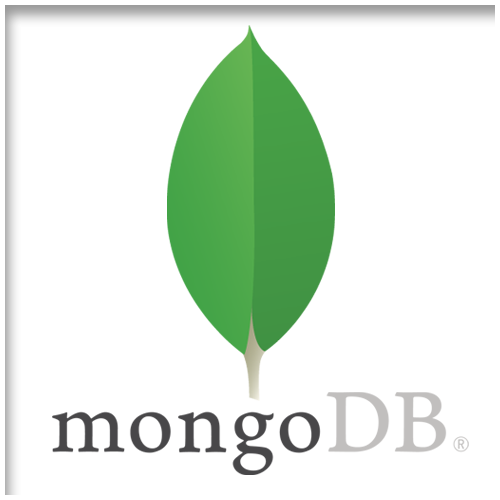
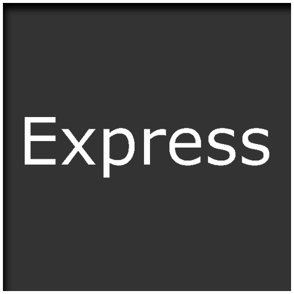
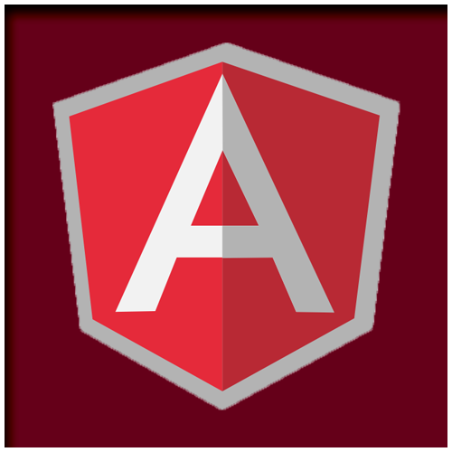
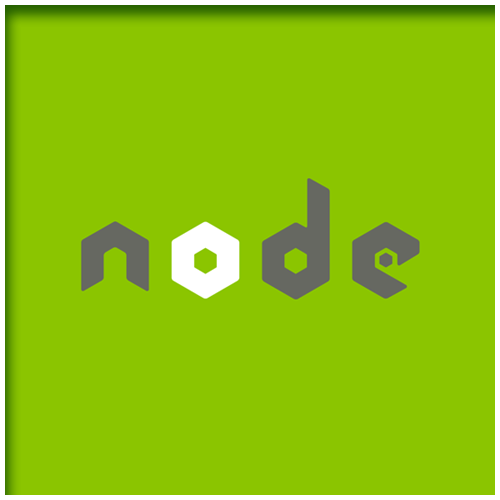

What Does it M.E.A.N. ?

NoSQL
M.
MongoDB is a NoSQL database which uses an object-oriented model rather than a relational model.

JavaScript Framework
E.
Express is a Lightweight, back-end framework that is built on top of Node.js. Extremely robust
functionality in spite of being such a lightweight framework.

JavasScript Framework
A.
AngularJS is a front-end, JavaScript framework and platform for building applications via HTML
and Typescript. Its robust library of methods and components allow DOM manipulation with a much higher
level of abstraction.

JavaScript Framework
N.
Node.js is a JavaScrip Framework which serves as a back-end runtime environment, and is the
backbone of the M.E.A.N. stack.
Click Me